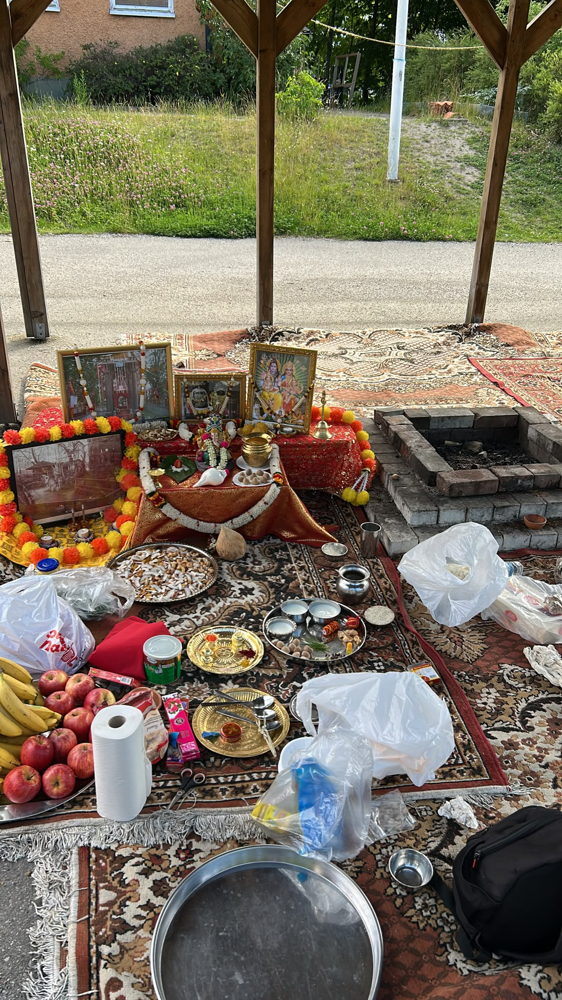
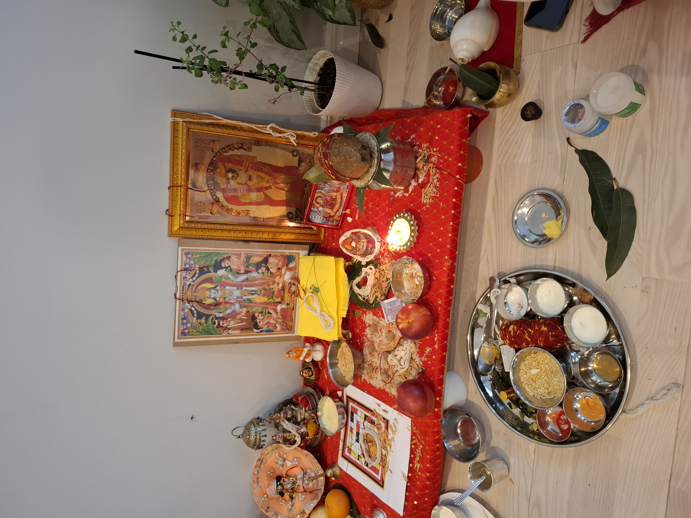
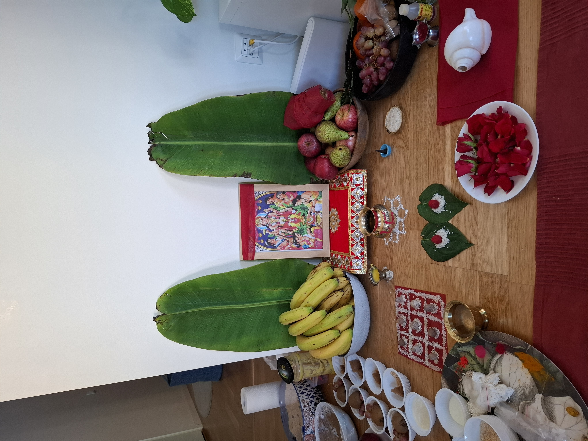
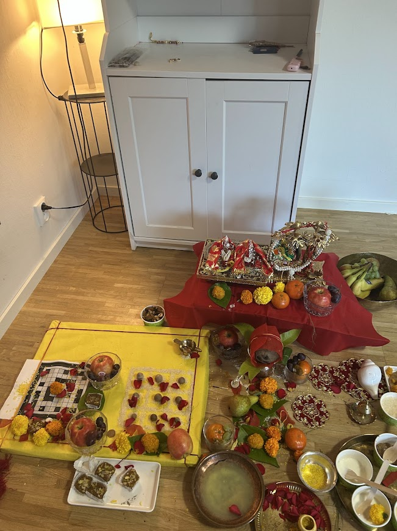
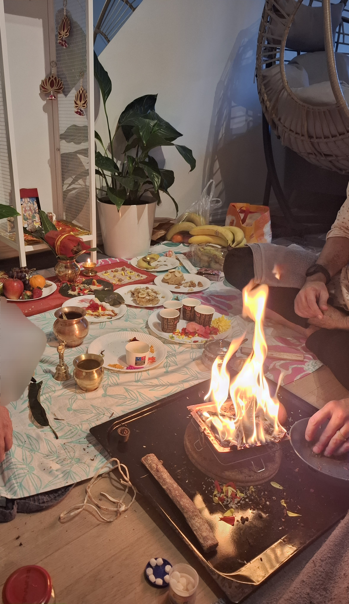
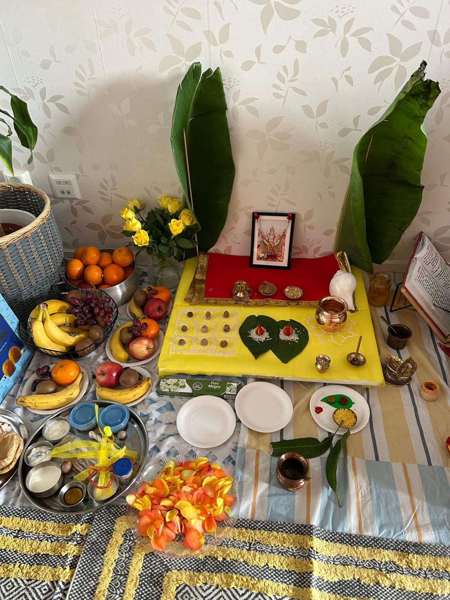

Gallery
Some glimpses of our Vedic rituals and poojas








Traditional Vedic Rituals & Poojas performed at your home in Sweden. Vedic-Rituals provides authentic Vedic poojas and rituals at your home in Stockholm. With years of experience, we ensure traditional practices with devotion and precision, bringing positivity and spiritual harmony to your family and home.
Bringing divinity to your doorstep in Stockholm
Dedicated to Lord Vishnu, the Lord of Truth. Performed for gratitude, peace, and prosperity on Purnima or milestones.
Vastu Shanti and Shubh Muhurat Pooja for your new home in Sweden to invite positive energy and divine protection.
Powerful worship of Lord Shiva with offerings of milk and honey for health, success, and spiritual strength.
Blessings for your workspace, vehicles, tools, and technology. Ideal for offices and technical professionals in Stockholm.
Lakshmi Pooja for Diwali and Durga Pooja/Kanya Pujan during Navratri to celebrate the triumph of light and energy.
Akhand Ramayan Path: Continuous recitation of Ramayan for blessings and peace.
Sundarkand Path: Recitation of Sundarkand to remove obstacles and bring prosperity.
Ganesh Pooja: Worship of Lord Ganesha to remove hurdles and start new ventures.
Saraswati Pooja: Prayer for knowledge, wisdom, and academic success.
Hawan: Fire ritual for purification, protection, and positive energy.
Namkaran: Naming ceremony for newborns.
Navgrah: Peace rituals for planetary alignments.
Vastu Shanti: Rituals to harmonize your home and invite positive energy.
Some glimpses of our Vedic rituals and poojas






I am available to travel within Stockholm and nearby areas.